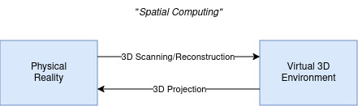

Notes
I. How to profit off of 3D
3D is perhaps the most powerful framework any algorithms, models, or systems can employ. In some sense, the idea of it is general enough to make connections with many important subjects and fields, but also the world we live, breathe, sense, and experience in is also three-dimension—something fundamental that even the SOTA model in different areas still lack (e.g., autoregressive-transformer LLMs) or struggle (e.g., inverse rendering).
Problems Beyond
Forward rendering, reconstruction, and other classical problems still have a lot of work to be done. However, the end goal has always been enriching our experience of this world. Some problems are clear about this. For example, better rendering to appease our thirst for certain appearance such as realism (e.g., PBR materials and path tracing) or the retro computer era of the 80s (e.g., surface-stable fractal dithering). Yet, other problems such as reconstruction are rather unclear about it. In this case, let’s say we reconstructed a scene with all of its lighting, materials, and geometry… cool. Now what? Satisfy your own curiosity—sure. But if anyone wants it anytime soon, it has to go through other problems also: Re-render the reconstructed scene after it has been spatially manipulated for training humanoid robotics to better navigate around the house or re-simulate the reconstructed scene to infer consequences of current actions (or the lack thereof) to guide infrastructural decisions that reduces risks of flooding.
What do people want? What do businesses want? (What do interviewers want?) What do we all want?

For extensive existing work in “spatial computing” to expand into exciting new domains beyond 2030s, it first has to go beyond a simple 2D screen. Sure, LLMs brings a huge wild card and questions the need to go beyond an intelligent-like chatbot that could answer your spatial questions and alike, but that really misses the point of 3D and not using its fullest potential. In the times where greater amount of our attention is spent on backlit screen or just flat screens in general, I think consumers (you, me, and others) would appreciate something a bit different, something more immersive.
Future Work
Robotics, AR, and other active forms of immersive interaction of the physical space will be looked into. Commonly overlooked problems where “spatial computing” methods can be shown to immensely help or solve will also be discussed. Additionally, current state of industry and where are people heading into in regards to “spatial computing” will also be looked into. This line of thought will be shelved for now as other important works take precedence.